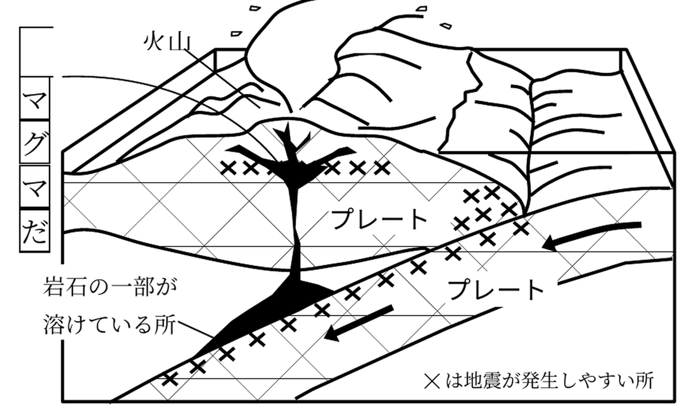
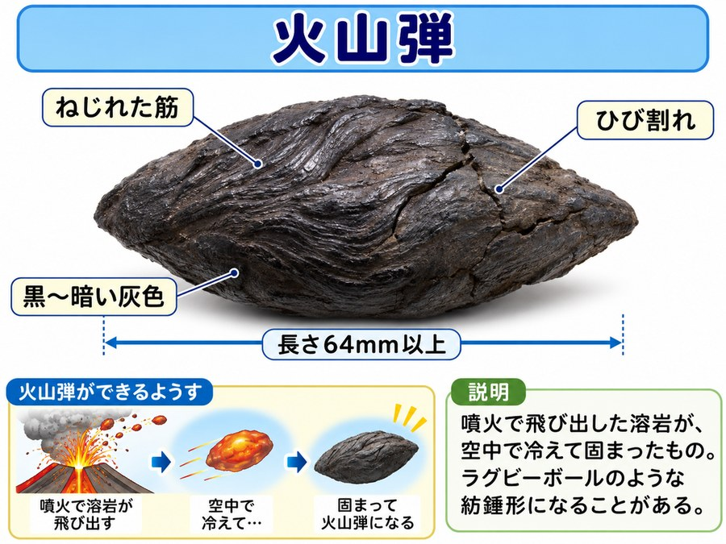
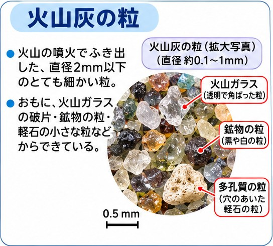
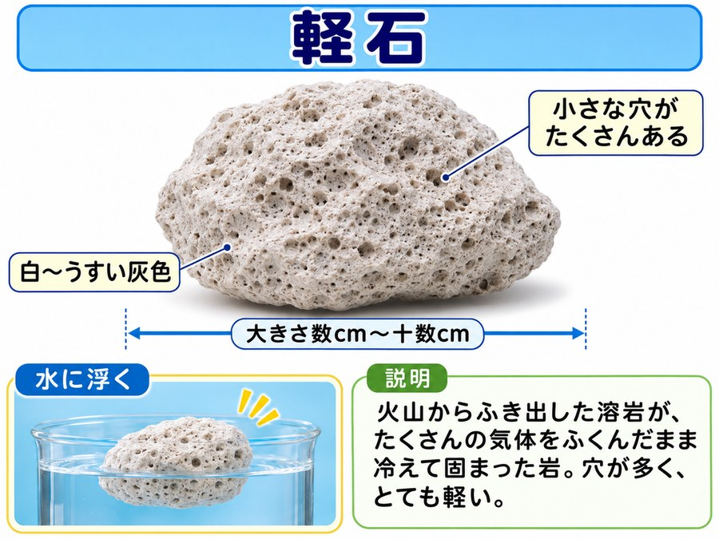
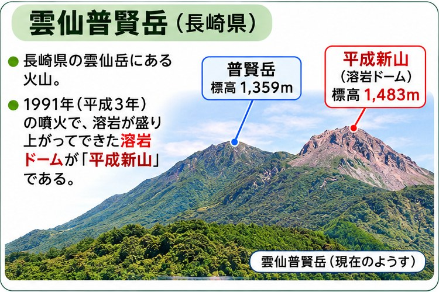
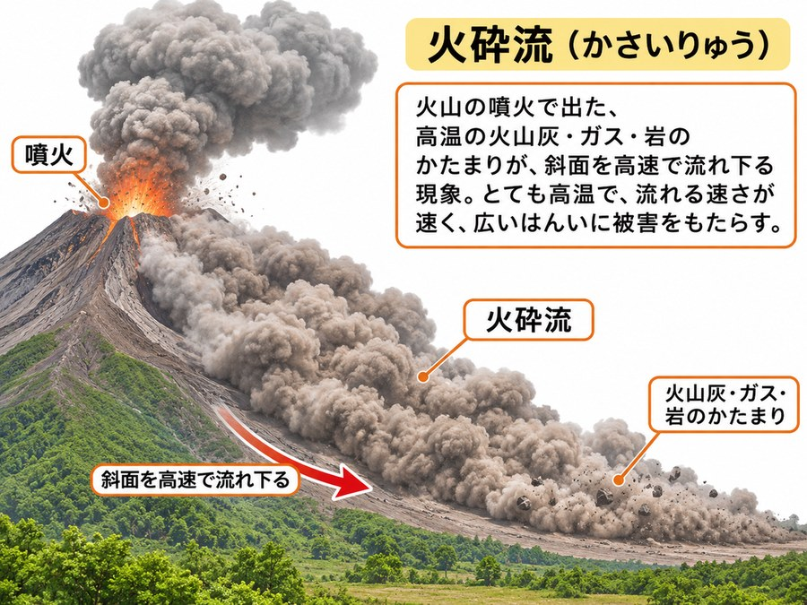

1火山のつくり(マグマ・溶岩・マグマだまり)
📖 説明
火山の地下では、岩石の一部がとけています。プレートどうしがぶつかる場所などで、岩石の一部がとけたものをマグマといいます。
マグマが地表に出てきたものを溶岩といいます。地表に流れ出したときの温度は、約800℃〜1200℃です。
マグマは、地表に流れ出す前に、いったん地下のマグマだまりにたくわえられます。

図1 火山のつくり(×は地震が起こりやすい所)
★ 覚えよう!
- マグマ……地下で、岩石の一部がとけたもの。
- 溶岩……マグマが地表に出てきたもの。温度は約800℃〜1200℃。
- マグマだまり……マグマが地表に出る前に、いったんたくわえられる場所。
📚 語群 ― タップして選び、説明文の空欄をタップ!
✏️ ミニテスト(全3問)
問1マグマが地表に出てきたものを、溶岩という。
○ 正解です。地下にあるものはマグマ、地表に出てきたものは溶岩とよびます。
問2マグマが地表に流れ出す前に、いったんたくわえられる場所はどこか。
正解はイ。マグマは、地下のマグマだまりにいったんたくわえられてから、地表に出てきます。
問3溶岩が地表に流れ出したときの温度は、約80℃〜120℃である。
× 約80℃〜120℃ではなく、約800℃〜1200℃です。とても高い温度です。
🏆 ベストタイム
2火山の噴出物
📖 説明
火山が噴火すると、いろいろなものが出てきます。これらをまとめて火山の噴出物といいます。
| 噴出物 | 特ちょう |
|---|---|
| 火山ガス | 90%以上は水蒸気。硫化水素H₂S、二酸化硫黄SO₂なども含む。 |
| 溶岩 | マグマが噴出したもの。約800℃〜1200℃。 |
| 火山弾 | 64mm以上で、ラグビーボールのような形。 |
| 火山れき | 64mm〜2mm。 |
| 火山灰 | 2mm以下。 |
| 軽石 | たくさんの穴があいた、軽い岩石。 |
火山から出る気体を火山ガスといいます。火山ガスの90%以上は水蒸気です。
大きさが64mm以上で、ラグビーボールのような形をした噴出物を火山弾といいます。

図2 火山弾
大きさが64mm〜2mmのものを火山れき、2mm以下の細かい粒を火山灰といいます。

図3 火山灰の粒(拡大)
マグマが地表に出るとき、まわりの圧力が急に下がります。すると、マグマの中にたまっていたガスがふき出して、たくさんの穴があいた岩石ができます。これを軽石といいます。

図4 軽石
★ 覚えよう!
- 火山ガスの90%以上は水蒸気。
- 大きさの順……火山弾(64mm以上) → 火山れき(64〜2mm) → 火山灰(2mm以下)
- 軽石……マグマの中のガスがふき出して、たくさんの穴があいた岩石。
📚 語群 ― タップして選び、説明文の空欄をタップ!
✏️ ミニテスト(全4問)
問1大きさが2mm以下の、とても細かい噴出物はどれか。
正解はウ。2mm以下の細かい粒を火山灰といいます。
問2火山ガスの90%以上は、水蒸気である。
○ 正解です。火山ガスのほとんどは水蒸気で、ほかに硫化水素や二酸化硫黄などがふくまれます。
問3軽石にたくさんの穴があいているのは、なぜか。
正解はイ。マグマが地表に出るとき、圧力が急に下がり、中のガスがふき出して穴ができます。
問4火山弾は、大きさが2mm以下の細かい粒である。
× 火山弾は、64mm以上のラグビーボールのような形のものです。2mm以下は火山灰です。
🏆 ベストタイム
3火砕流
📖 説明
溶岩のかけらが、高温の火山ガスや火山灰といっしょに、時速100kmぐらいの速さで斜面を下りてくることがあります。これを火砕流といいます。
1991年に、長崎県の雲仙普賢岳で、火砕流がおきました。

図A 雲仙普賢岳

図B 火砕流のようす
★ 覚えよう!
- 火砕流……溶岩のかけらが、高温の火山ガスや火山灰といっしょに、時速100kmぐらいの速さで斜面を下りてくるもの。
- 1991年、長崎県の雲仙普賢岳で火砕流がおきた。
📚 語群 ― タップして選び、説明文の空欄をタップ!
✏️ ミニテスト(全3問)
問1火砕流は、高温の火山ガスや火山灰が、ゆっくりと流れる現象である。
× 火砕流は、時速100kmぐらいの速さで斜面を下りてきます。とても速く、危険です。
問21991年に、火砕流がおきた火山はどれか。
正解はイ。1991年に、長崎県の雲仙普賢岳で火砕流がおきました。
問3火砕流が斜面を下りてくる速さは、どれぐらいか。
正解はウ。時速100kmぐらいの速さで流れ下ります。